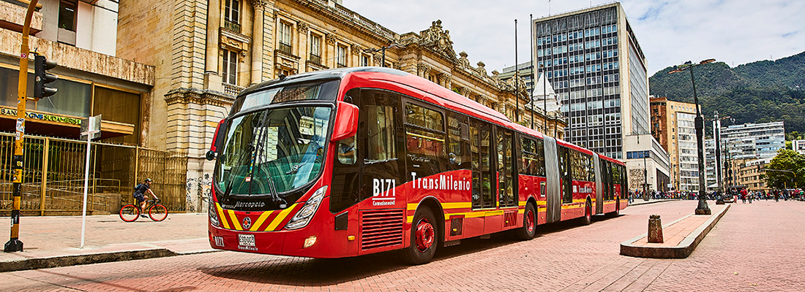

Juan Soler
Data Analyst and Digital Journal
Este proyecto evalúa la viabilidad de implementar una tarifa cero en el sistema de transporte masivo TransMilenio en Bogotá, extendiéndose al municipio de Soacha. Se proponen tres escenarios distintos, considerando la distribución progresiva de costos entre los diferentes estratos socioeconómicos y un subsidio parcial por parte de la alcaldía de Bogotá.
TransMilenio es una pieza clave en la movilidad de la capital colombiana y sus áreas aledañas. La propuesta de tarifa cero busca mejorar la accesibilidad al transporte público y aliviar la carga financiera de los ciudadanos, fomentando a su vez una mayor sostenibilidad urbana.
Se ha realizado un análisis basado en el número de habitantes por estrato en Bogotá y Soacha, calculando el promedio de personas por familia y estimando la contribución financiera necesaria de cada estrato para cubrir el costo operativo anual de TransMilenio.
| Estrato | Habitantes | Familias Promedio (4 hab) |
|---|---|---|
| Estrato 1 | 735,748 | 183,937 |
| Estrato 2 | 3,327,722 | 831,931 |
| Estrato 3 | 2,857,861 | 714,465 |
| Estrato 4 | 757,923 | 189,481 |
| Estrato 5 | 240,570 | 60,143 |
| Estrato 6 | 124,889 | 31,222 |
En este escenario, todos los estratos contribuyen de manera progresiva al costo. Sin embargo, el análisis indica que la carga financiera es desproporcionadamente alta para los estratos superiores, lo que hace que la propuesta sea inviable tanto a corto como a largo plazo.
| Estrato | Porcentaje del Costo | Total Recaudado por Estrato | Tarifa Anual por Familia | Tarifa Mensual por Familia |
|---|---|---|---|---|
| estrato 1 | 0,022 | $ 110.000.000.000 | $ 598.031 | $ 49.836 |
| estrato 2 | 0,30 | $ 1.500.000.000.000 | $ 1.803.035 | $ 150.253 |
| estrato 3 | 0,35 | $ 1.750.000.000.000 | $ 2.449.384 | $ 204.115 |
| estrato 4 | 0,20 | $ 1.000.000.000.000 | $ 5.277.581 | $ 439.798 |
| estrato 5 | 0,08 | $ 400.000.000.000 | $ 6.650.871 | $ 554.239 |
| estrato 6 | 0,05 | $ 240.000.000.000 | $ 7.686.826 | $ 640.569 |
Al incorporar a Soacha en el esquema de financiación, se logra una distribución más equitativa del costo. Los estratos más bajos asumen una porción menor, mientras que los más altos contribuyen con más, sin resultar excesivo. Este escenario presenta una viabilidad mayor.
| Estrato | Habitantes | Familias Promedio (4 hab) |
|---|---|---|
| estrato 1 | 404,144 | 101,036 |
| Estrato 2 | 323,315 | 80,829 |
| Estrato 3 | 80,828 | 20,207 |
| Estrato | Porcentaje del Costo | Total Recaudado por Estrato | Tarifa Anual por Familia | Tarifa Mensual por Familia |
|---|---|---|---|---|
| estrato 1 | 0,032 | $ 160.000.000.000 | $ 561.457 | $ 46.788 |
| estrato 2 | 0,42 | $ 2.100.000.000.000 | $ 2.300.716 | $ 191.726 |
| estrato 3 | 0,38 | $ 1.900.000.000.000 | $ 2.586.187 | $ 215.516 |
| estrato 4 | 0,11 | $ 550.000.000.000 | $ 2.902.670 | $ 241.889 |
| estrato 5 | 0,04 | $ 190.000.000.000 | $ 3.159.164 | $ 263.264 |
| estrato 6 | 0,02 | $ 100.000.000.000 | $ 3.202.844 | $ 266.904 |
Este escenario considera un subsidio de 2 billones de pesos por parte de la alcaldía de Bogotá. Bajo esta condición, el costo por familia se reduce significativamente, lo que lo convierte en el escenario más favorable y equitativo para todos los estratos.
| Estrato | Porcentaje del Costo | Total Recaudado por Estrato | Tarifa Anual por Familia | Tarifa Mensual por Familia |
|---|---|---|---|---|
| estrato 1 | 0,032 | $ 96.000.000.000 | $ 336.874 | $ 28.073 |
| estrato 2 | 0,42 | $ 1.260.000.000.000 | $ 1.380.430 | $ 115.036 |
| estrato 3 | 0,38 | $ 1.140.000.000.000 | $ 1.551.712 | $ 129.309 |
| estrato 4 | 0,11 | $ 330.000.000.000 | $ 1.741.602 | $ 145.133 |
| estrato 5 | 0,04 | $ 114.000.000.000 | $ 1.895.498 | $ 157.958 |
| estrato 6 | 0,02 | $ 60.000.000.000 | $ 1.921.706 | $ 160.142 |
La actual estructura tarifaria de TransMilenio representa una carga económica considerable para los ciudadanos de Bogotá. Con un costo de 3.100 pesos por viaje y dos viajes diarios de lunes a sábado, una sola persona incurre en un gasto mensual de 148.800 pesos sin contar posibles transbordos o desplazamientos adicionales. Para una familia con dos miembros que se desplazan regularmente, este gasto asciende a 297.600 pesos mensuales. La implementación de la tarifa cero, tanto en los escenarios de Bogotá-Soacha como con el subsidio del gobierno, no solo alivia esta carga financiera sino que también se presenta como una medida económicamente viable y sostenible.
La gratuidad del transporte público en la capital conlleva múltiples beneficios. Un sistema de tarifa cero podría:
Actualmente, la alcaldía destina 5 billones de pesos anuales para el funcionamiento de TransMilenio. Bajo el nuevo modelo, la ciudad podría ahorrar entre 5 y 3 billones de pesos, recursos que podrían ser reinvertidos para mejorar la infraestructura de TransMilenio o en otros proyectos urbanos. Por ejemplo, con una inversión de 3 billones, se podrían adquirir aproximadamente 2,000 nuevos buses biarticulados, ampliando significativamente la flota actual.
La implementación de la tarifa cero puede tener un efecto multiplicador en el crecimiento urbano:
La tarifa cero para TransMilenio es más que una propuesta económica; es una inversión en el capital social y ambiental de Bogotá. Representa una visión progresista de la movilidad urbana, que no solo beneficia a los usuarios actuales del sistema sino que también sienta las bases para una ciudad más inclusiva, sostenible y próspera.

Data Analyst and Digital Journal